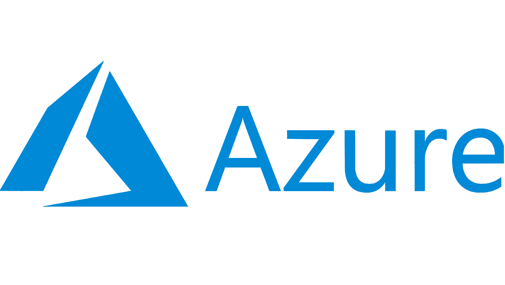

Un autre principe clé du DevOps est la transparence et la communication fluide entre les équipes. Grâce à
des outils et des pratiques adaptés tels que la gestion des incidents, les tableaux de bord de suivi des
performances et les réunions régulières, les membres des équipes DevOps peuvent partager des
informations cruciales, identifier les problèmes potentiels et collaborer efficacement pour les
résoudre. La culture DevOps encourage également l'apprentissage continu et l'amélioration itérative. En
favorisant l'expérimentation, le partage des connaissances et l'analyse des résultats, les équipes
peuvent innover plus rapidement et s'adapter aux changements du marché. En adoptant une approche basée
sur les principes du DevOps, les organisations peuvent réaliser des gains significatifs en termes
d'efficacité, de qualité, de fiabilité et de satisfaction client, tout en favorisant une culture de
collaboration et de responsabilisation au sein de leurs équipes.